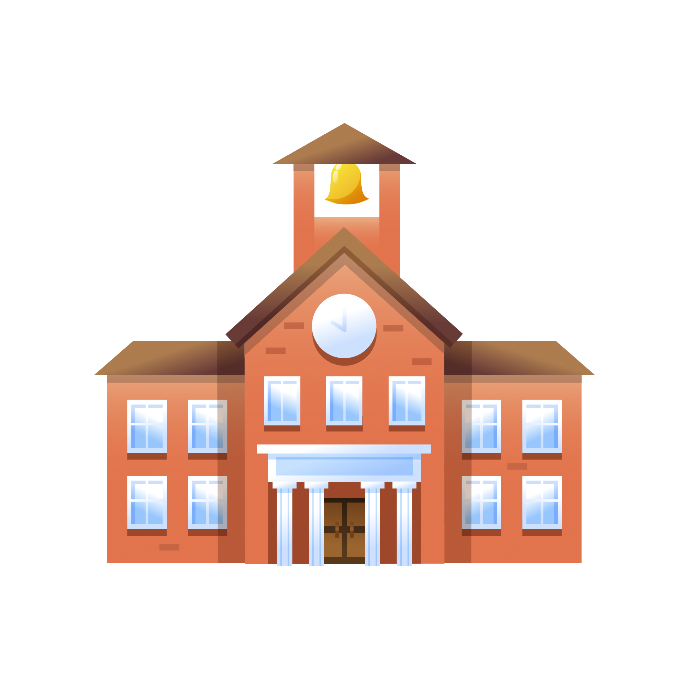

Hi My name is Debadutta Barik
I am a passionate
Educational Background

St.Pauls School(2008-2020)
I completed my primary and secondary education at **St. Paul's School**,
where I developed a strong academic foundation and a passion for learning. Excelling in the
**Science stream**, I secured an impressive **94% in the Matriculation exam**, a testament to my
dedication, discipline, and consistent hard work during my schooling years.
Doon International School(2020-2022)
I pursued my higher secondary education at **Doon International School,
Bhubaneswar**, where I continued to nurture my interest in the **Science stream**. With a focus
on both academics and personal growth, I achieved a commendable **75%** in my board exams,
reflecting my dedication and determination during this crucial phase of my education.
SOA Institute Of Technology(2022-Present)
I am currently pursuing my **B.Tech in Computer Science** at **SOA
Institute of Technical Education and Research (ITER), Bhubaneswar**, where I am in my **3rd
year**. With a focus on academics and practical projects, I have maintained a **current GPA of
7.5**, reflecting my consistent effort and commitment to learning.